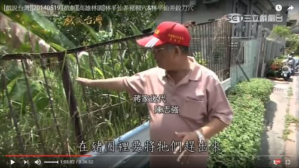
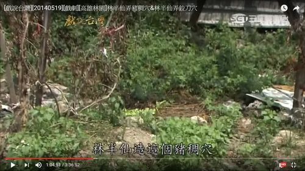

【豬巢穴】 |
|
|  戲說台灣訪問：蔣家子孫後代豬巢穴位址 |
 戲說台灣訪問：豬巢穴大約位址 |
|
據林半仙曾經來到現在林園區文賢路一帶（俗稱「韭菜園」），認為當地地勢方圓一凸，處在亥方潮濕 ，亥方屬豬，豬喜好潮濕，所以適合養豬，豬隻生長健康、碩壯。蔣姓族人聽從林半仙的話打造巢穴養豬，按照林半仙指示豬舍門尺寸不得超過一尺八寸寬，結果，蔣家養出來的豬果然胖嘟嘟 。 可是，問題來了，大肥豬養得千斤重，待要出售時，兩尺寬的豬巢門根本抬不出去，只得勞師動眾抬過三尺高的豬巢圍牆，真的非常麻煩！ 蔣家因養豬事業鼎盛，某次過年節卻疏忽了孝敬半林仙，因此得罪高傲的林半仙而不自知。有天，當大家又七嘴八舌傷透腦筋，思考如何將條條大肥豬抬出去出售時，請林半仙出主意想個辦法？林半仙指示可以將豬巢穴門打掉，造一個更大的門，當工人敲掉不到兩尺寬門柱時，突然有兩道白煙噴出！慌亂中，林半仙已不知去向？原來這是林半仙高明法術，配合地氣理數築巢造穴養豬預埋的伏筆。 這一敲打，「豬巢穴」被破，從此蔣家再也養不出肥豬了！不知有影還無影?今蔣氏大厝位於林園佛教堂對面，文賢南路巷內。蔣氏開基祖玉振公為武舉人，現仍保存燕尾式屋脊的三合院傳統建築，前面原本有扇門，如今已不存在，但留下一門古井供民眾體驗 。 「豬巢穴」故事傳說年代已遠，問起蔣家後代也莫衷一是，說不出個統一的標準來！ |
|
| 圖片來源:YOUTUBE網站─戲說台灣，林半仙傳奇。 | |